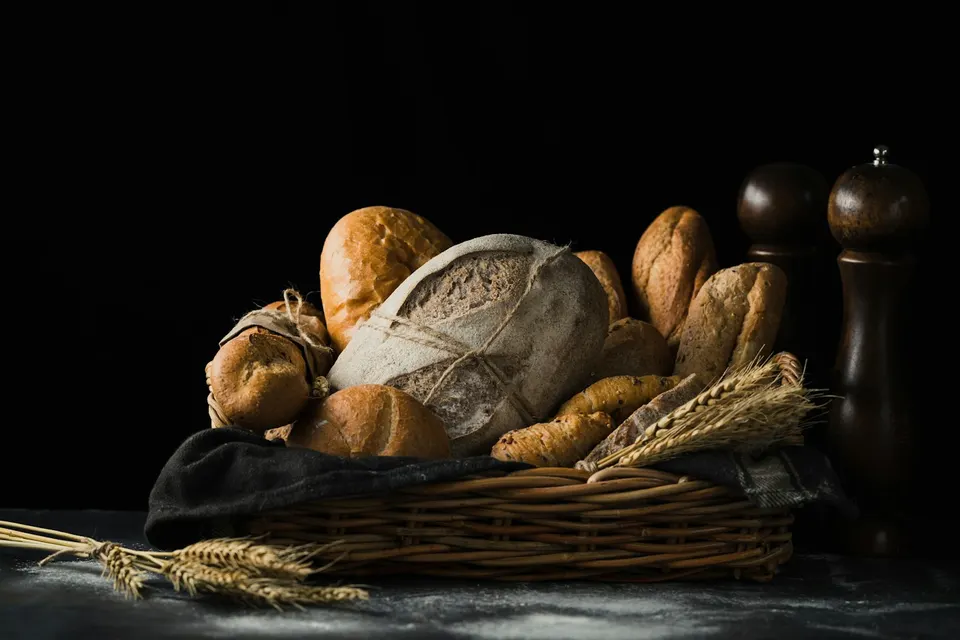
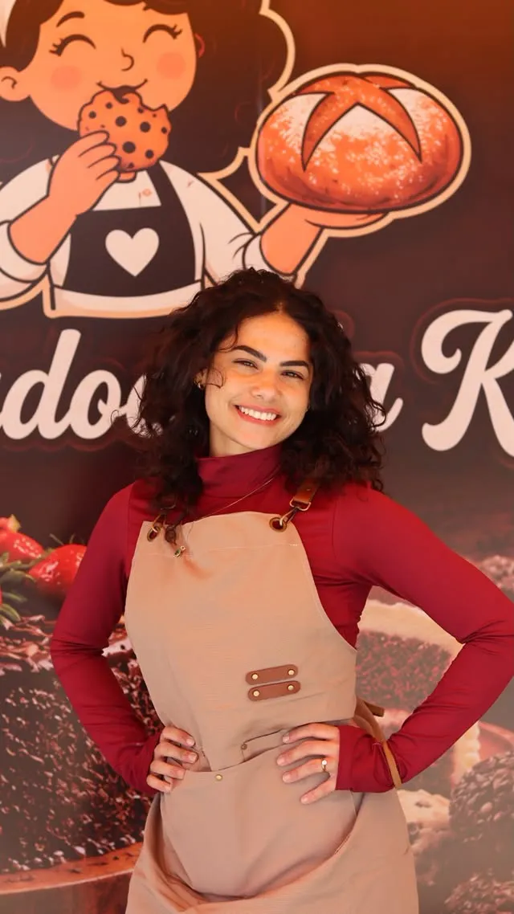
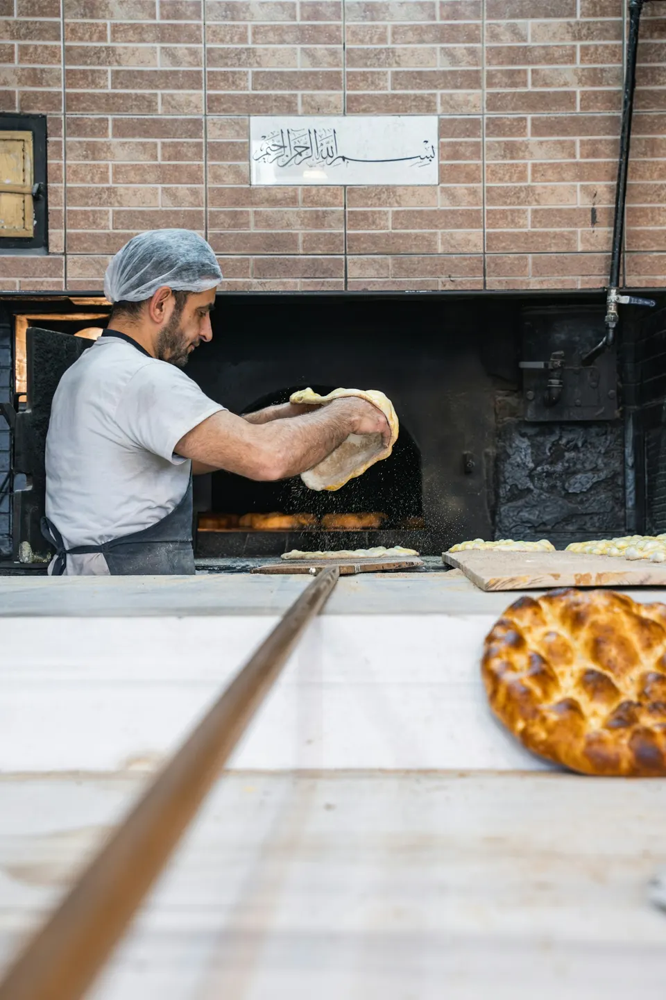
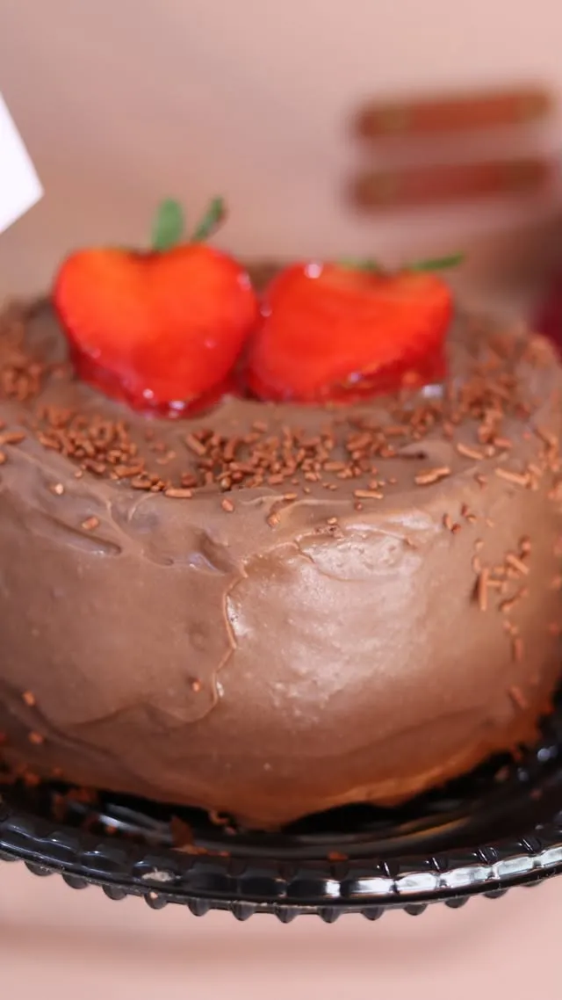
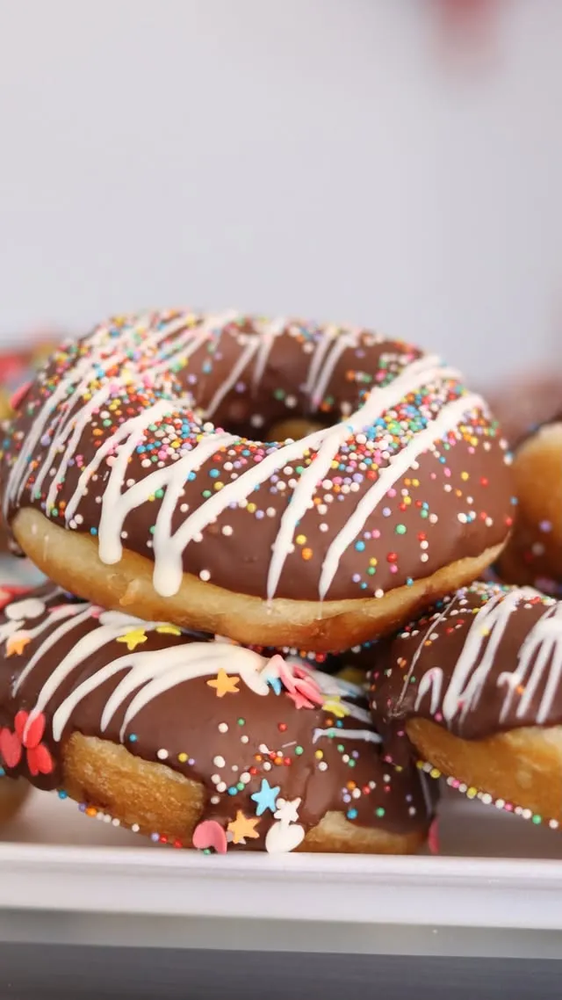
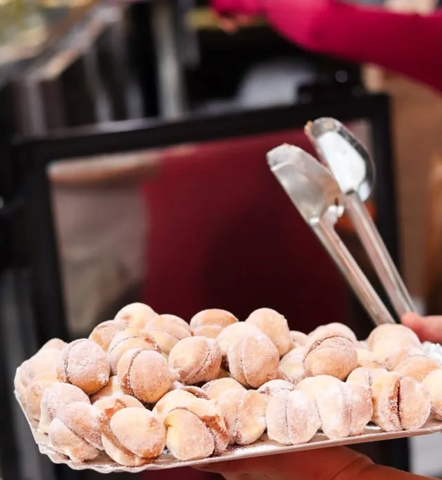
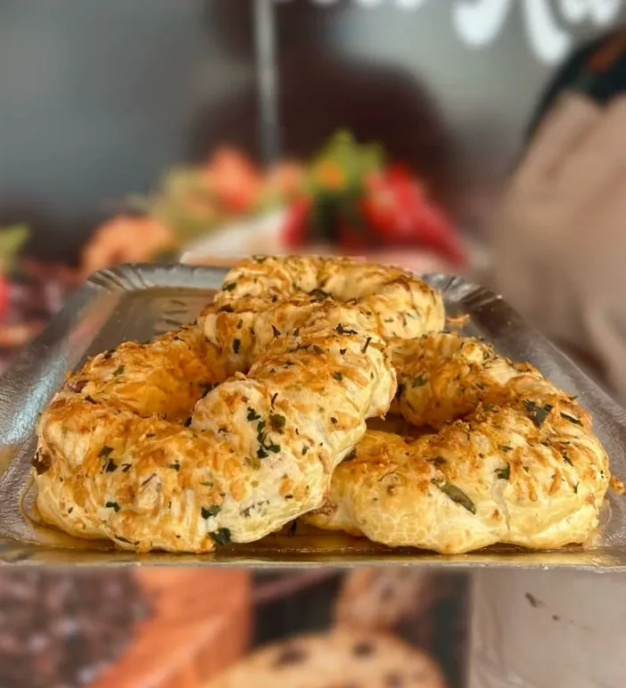
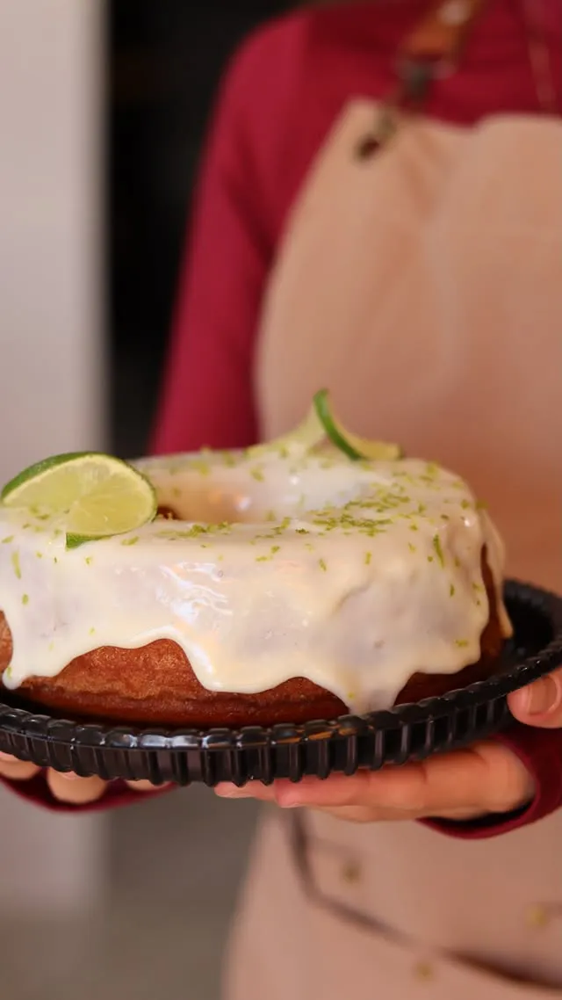
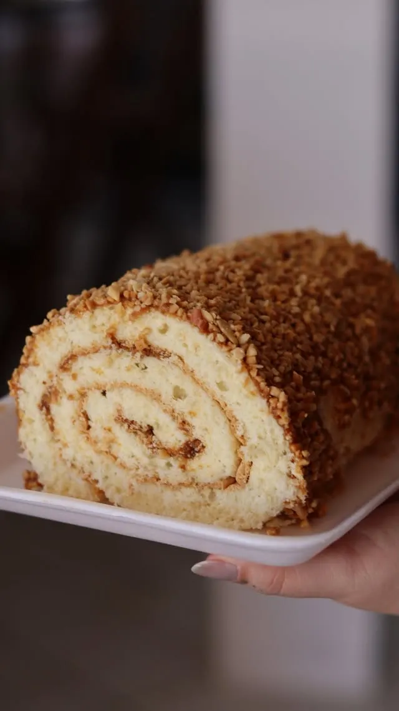

Padaria · Vila Nova, Joinville
Pão quentinho no Vila Nova, todo dia.
Todos os dias, das 7h às 19h30
Próxima fornada
Fornadas do dia

Hoje no balcão
A vitrine de hoje
A padaria da Ka
A Padoca da Ka nasceu em 2026, na São Firmino, para ser a padaria do bairro: pão saindo do forno o dia todo, café passado na hora e aquele salgado que vira hábito.


Direto do balcão
Feito aqui, todo dia
-

Bolo de chocolate com morango
-

Donut de chocolate
-

Casadinho
-

Rosca de queijo e ervas
-

Bolo de limão
-

Rocambole de doce de leite